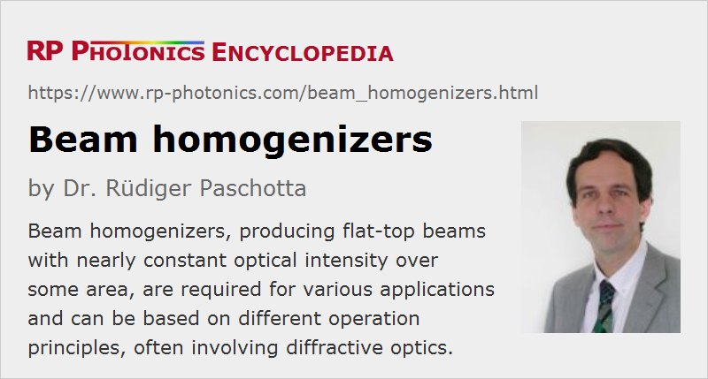

Beam Homogenizers
Definition: devices for producing beam profiles with homogeneous intensity distribution
German: Strahlhomogenisierer
How to cite the article; suggest additional literature
Author: Dr. Rüdiger Paschotta
Beam homogenizers are optical devices which are used to modify a laser beam (or sometimes some other light beam) such that one obtains a nearly constant optical intensity over some area, and negligible intensity outside that area. Such flat-top beams are required for some applications, in particular for some forms of laser material processing and optical lithography (e.g. for computer chip manufacturing), where one needs to expose a certain area on a workpiece to a well defined amount of optical radiation.
Beam homogenizers generally apply a random or quasi-random changes to the amplitude profile of a beam, and in that aspect they profoundly differ from beam shapers, which work in a deterministic manner.
Many beam homogenizers produce the wanted homogenized beam profile in a focal plane, while others do that for the far field. The shape of the produced intensity profile is often a square shape, in other cases a circle.
The generated beam profile is generally not perfectly flat, but exhibits some level of random fluctuations, sometimes also relatively regular interference patterns. Depending on the requirements of the application, more or less sophisticated operation principles are required to obtain a sufficiently high quality of homogenization in conjunction with a high enough optical efficiency.
Operation Principles
The operation principles of beam homogenizers can vary substantially and often involve sophisticated considerations. Conceptually simple approaches like using a simple random diffuser plate are often not sufficient, since the required quality of homogenization could not be achieved together with a high optical efficiency, i.e., with a high optical power throughput. Therefore, more advanced concepts have been developed:
- Some beam homogenizers are best explained based on Fourier optics. For example, they can be based on a microlens array placed in a conjugate plane and also contain Fourier lenses.
- Some homogenizers work on the basis of imaging, but there are also non-imaging designs, e.g. based on waveguides (light pipes, e.g. homogenizing rods) or multimode fibers. They work best with polychromatic non-collimated light inputs.
- Besides, there are other types of micro-optic diffractive elements, partly with pseudo-random structures, used in other types of homogenizers.
- When a highly coherent input beam is used, it is sometimes necessary to also apply a rotating diffuser plate – a concept which works only for continuous-wave beams, not for short laser pulses.
Which operation principle is most suitable for an application generally depends on the detailed requirements and on the coherence properties of the input beam. The Fresnel number is sometimes taken as a criterion for the choice of such methods.
Suppliers
The RP Photonics Buyer's Guide contains 16 suppliers for beam homogenizers. Among them:
Questions and Comments from Users
Here you can submit questions and comments. As far as they get accepted by the author, they will appear above this paragraph together with the author’s answer. The author will decide on acceptance based on certain criteria. Essentially, the issue must be of sufficiently broad interest.
Please do not enter personal data here; we would otherwise delete it soon. (See also our privacy declaration.) If you wish to receive personal feedback or consultancy from the author, please contact him e.g. via e-mail.
By submitting the information, you give your consent to the potential publication of your inputs on our website according to our rules. (If you later retract your consent, we will delete those inputs.) As your inputs are first reviewed by the author, they may be published with some delay.
See also: beam shapers, laser beams, flat-top beams, optical intensity, diffractive optics
and other articles in the category general optics
|  |
If you like this page, please share the link with your friends and colleagues, e.g. via social media:
These sharing buttons are implemented in a privacy-friendly way!